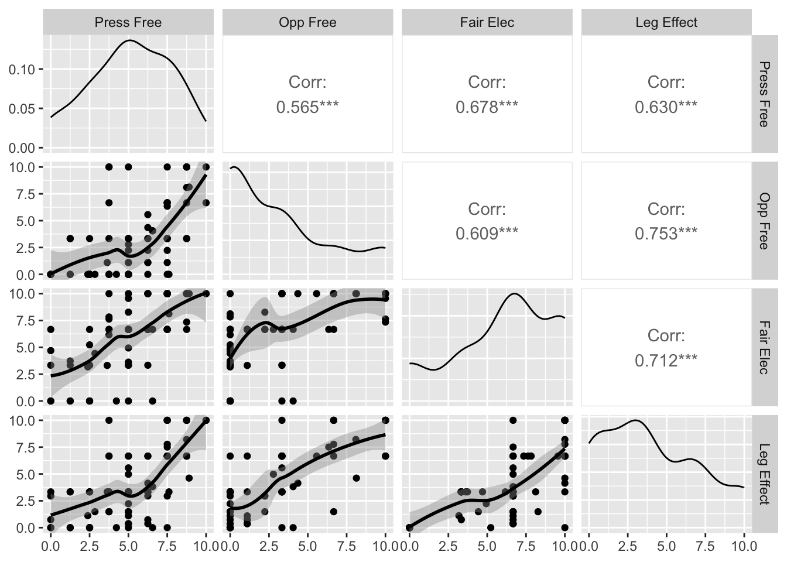

Chapter 9 Measurement Issues
I am really interested in measurement issues. In fact, I wrote a book about it with some really smart co-authors. There, we mostly focus on things not well covered in other parts of this vast literature - Nomiante models, optimal classification, a bit of multidimensional scaling and Bayesian implementations of these various tools.
Here, I want to talk, instead about some of the more conventional measures for dealing with multiple indicators.
9.1 Reliability Analysis
Often times with measurement, a simple solution is sufficient. In this case, we might be interested in assessing the reliability of a set of indicators relative to some unknown, unidimensional latent construct. To illustrate, we’ll use Bollen’s measures of political democracy.
In this dataset, y1-y4 are indicators for 1960 and y5-y8 are indicators for 1965. The variables x1-x3 are different measures of development (GNP, energy consumption and labour force participation, respectively) for 1960.
Let’s look at the 1965 democracy indicators. The first thing we could do is to simply look at the relationships in the data. The assumption here is that the relationship between the indicators and the latent dimension is monotonic.
library(GGally)
ggpairs(PoliticalDemocracy, 5:8,
columnLabels=c("Press Free", "Opp Free", "Fair Elec", "Leg Effect"),
lower=list(continuous="smooth_loess"))
The correlations here are all reasonably strong and the relationsihps seem to be more or less monotonic in nature.
You Try It!
We’re going to use a different version of the WVS data that has all of the indicators for the secular and emancipatory values and the moral variable. Load the data as follows:
Now look at the correlations and relationships between the indicators:
- V198-V210 are the indicators for the moral variable.
- I_INDEP-I_VOICE2 are the indicators for the emancipatory values scale.
- I_AUTHORITY-I_TRUSTCOURTS are the indicators for secular values.
The psych package has a function called alpha that does reliability analaysis. Let’s see what it looks like. The check.keys=TRUE will reverse items that are negatively related to the underlying dimension.
library(psych)
a <- alpha(scale(PoliticalDemocracy[,c("y5", "y6", "y7", "y8")]),
check.keys = TRUE)
a##
## Reliability analysis
## Call: alpha(x = scale(PoliticalDemocracy[, c("y5", "y6", "y7", "y8")]),
## check.keys = TRUE)
##
## raw_alpha std.alpha G6(smc) average_r S/N ase mean sd median_r
## 0.88 0.88 0.86 0.66 7.7 0.022 -4.6e-16 0.86 0.65
##
## 95% confidence boundaries
## lower alpha upper
## Feldt 0.84 0.88 0.92
## Duhachek 0.84 0.88 0.93
##
## Reliability if an item is dropped:
## raw_alpha std.alpha G6(smc) average_r S/N alpha se var.r med.r
## y5 0.87 0.87 0.83 0.69 6.7 0.026 0.0055 0.71
## y6 0.86 0.86 0.81 0.67 6.2 0.028 0.0017 0.68
## y7 0.85 0.85 0.80 0.65 5.6 0.031 0.0092 0.63
## y8 0.83 0.83 0.77 0.62 4.8 0.034 0.0033 0.61
##
## Item statistics
## n raw.r std.r r.cor r.drop mean sd
## y5 75 0.83 0.83 0.74 0.70 2.6e-16 1
## y6 75 0.85 0.85 0.78 0.73 -5.2e-16 1
## y7 75 0.87 0.87 0.81 0.76 -1.4e-15 1
## y8 75 0.90 0.90 0.87 0.81 -2.1e-16 1The overal alpha of the scale is .88 and that can’t be improved upon by deleting any of the indicators from the analysis. This suggests a pretty good fit, overall. If we wanted to use the variable in subsequent analyses, we could simply get the scores element out of the object a and that is our estimate of the latent construct.
We could also construct the democracy variable for 1960:
##
## Reliability analysis
## Call: alpha(x = scale(PoliticalDemocracy[, c("y1", "y2", "y3", "y4")]),
## check.keys = TRUE)
##
## raw_alpha std.alpha G6(smc) average_r S/N ase mean sd median_r
## 0.87 0.87 0.85 0.63 6.7 0.025 -5.3e-16 0.85 0.64
##
## 95% confidence boundaries
## lower alpha upper
## Feldt 0.81 0.87 0.91
## Duhachek 0.82 0.87 0.92
##
## Reliability if an item is dropped:
## raw_alpha std.alpha G6(smc) average_r S/N alpha se var.r med.r
## y1 0.81 0.81 0.77 0.59 4.4 0.038 0.0182 0.61
## y2 0.85 0.85 0.80 0.66 5.8 0.029 0.0020 0.68
## y3 0.86 0.86 0.81 0.67 6.1 0.028 0.0037 0.69
## y4 0.80 0.80 0.75 0.58 4.1 0.040 0.0135 0.60
##
## Item statistics
## n raw.r std.r r.cor r.drop mean sd
## y1 75 0.88 0.88 0.82 0.77 1.8e-16 1
## y2 75 0.82 0.82 0.74 0.67 -4.5e-16 1
## y3 75 0.81 0.81 0.71 0.66 -1.2e-15 1
## y4 75 0.89 0.89 0.85 0.79 -3.8e-16 1In Bollen’s model, he also estimates the latent variable relating to the x variables. We could see what that looks like as well.
##
## Reliability analysis
## Call: alpha(x = scale(PoliticalDemocracy[, c("x1", "x2", "x3")]), check.keys = TRUE)
##
## raw_alpha std.alpha G6(smc) average_r S/N ase mean sd median_r
## 0.94 0.94 0.92 0.85 17 0.011 1.1e-15 0.95 0.85
##
## 95% confidence boundaries
## lower alpha upper
## Feldt 0.92 0.94 0.96
## Duhachek 0.92 0.94 0.97
##
## Reliability if an item is dropped:
## raw_alpha std.alpha G6(smc) average_r S/N alpha se var.r med.r
## x1 0.92 0.92 0.85 0.85 11 0.019 NA 0.85
## x2 0.89 0.89 0.80 0.80 8 0.026 NA 0.80
## x3 0.94 0.94 0.89 0.89 17 0.013 NA 0.89
##
## Item statistics
## n raw.r std.r r.cor r.drop mean sd
## x1 75 0.95 0.95 0.91 0.88 5.0e-15 1
## x2 75 0.97 0.97 0.95 0.92 -1.0e-15 1
## x3 75 0.93 0.93 0.87 0.85 -4.8e-16 1PoliticalDemocracy$d65 <- a$scores
PoliticalDemocracy$d60 <- a2$scores
PoliticalDemocracy$i60 <- a3$scores
mod <- lm(d65 ~ d60 + i60, data=PoliticalDemocracy)
summary(mod)##
## Call:
## lm(formula = d65 ~ d60 + i60, data = PoliticalDemocracy)
##
## Residuals:
## Min 1Q Median 3Q Max
## -1.08110 -0.26988 0.02386 0.27966 1.12847
##
## Coefficients:
## Estimate Std. Error t value Pr(>|t|)
## (Intercept) -3.183e-16 4.782e-02 0.000 1.0000
## d60 7.953e-01 6.173e-02 12.883 <2e-16 ***
## i60 1.823e-01 5.523e-02 3.301 0.0015 **
## ---
## Signif. codes: 0 '***' 0.001 '**' 0.01 '*' 0.05 '.' 0.1 ' ' 1
##
## Residual standard error: 0.4141 on 72 degrees of freedom
## Multiple R-squared: 0.7755, Adjusted R-squared: 0.7693
## F-statistic: 124.4 on 2 and 72 DF, p-value: < 2.2e-16You Try It!
Evaluate the reliability of the three different scales.
- Then, estimate the model of emancipatory values scale on secular values, moral atitudes as well as V248 (education), V242 (age), V240 (gender), and V238 (income).
9.2 Exploratory Factor Analysis and Principal Components Analysis
The EFA and PCA models are both essentially dimension reduction techniques, but with different underlying assumptions. The EFA model is a causal model (or sometimes called a spurious correlation model) where we assume that the inter-relationships among indicators exist because of their relationship to a common latent variable (or set of latent variables). That is, once we account for the latent variable, the observed indicators are independent. The principal components model is just a variance maximizing linear transformation of the observed indicators. Basically, the PCA model is trying to identify independent sources of systematic variation in the observed indicators.
One of the benefits of EFA (or PCA) relative to the summated rating model (the one we estimated with alpha()) is that Cronbach’s \(\alpha\) is not a good test of dimensionality. It assumes unidimensional structure and can actually mask multidimensional structure in the data. If there is any question about the underlying dimensionality of the data, then one of these other tools is more appropriate.
One of the potential problems here is that despite the important theoretical differences between the two models, there are distinct similarities in the technical tools used to estimate the models - ultimately they both depend on the singular value decomposition (or eigen decomposition when the input data is a correlation matrix).
First, let’s consider PCA. One tool we can use as a sort of diagnostic is a biplot. This allows us to visualize the underling structure in the data, at least in one or two (or sometimes three) dimensions. We can use the ggbiplot() function in the package of the same name to make a biplot.
# remotes::install_github("vqv/ggbiplot")
library(ggbiplot)
pcafit <- princomp(PoliticalDemocracy[,c("y5", "y6", "y7", "y8")],
cor=TRUE)
ggbiplot(pcafit) +
theme_bw() +
theme(aspect.ratio=1)The way that we can interpret the biplot is in terms of the angles between the vectors and the \(x\)- and \(y\)-axes. Geometrically, the correlation is the cosine of the angle between two vectors. FYI: angles in R are measured in radians, not degrees. To convert your degrees to radians, use the equation
\[\text{raidans} = \text{degrees}\times \frac{\pi}{180}\]
Right, back to the plot. All of the vectors for the four variables have relative close angles with each other and with the main (horizontal) axis. They are less well closely related to the second axis. This, to me, would argue that there is really one dimension here.
Looking at the results of the principal components fit above, we see a vector of standard deviations. These tell us how much of the underlying variation is captured by each component. When cor=TRUE, each variable has a indicator contributes a variance of 1 to the variance to be explained. If we square the standard deviations (to make them variances) and divide each one by the total, that gives us the proportion of variance explained by each component. Here, the first component captures about \(74\%\) of the total variance. The next component captures only about \(12\%\) of the variance to be explained. This is less than a single variable’s worth of variance (which would be \(25\%\) because there are four indicators). Again, this corroborates the unidimensionality.
## Importance of components:
## Comp.1 Comp.2 Comp.3 Comp.4
## Standard deviation 1.7250783 0.6946489 0.56639263 0.46985874
## Proportion of Variance 0.7439738 0.1206343 0.08020015 0.05519181
## Cumulative Proportion 0.7439738 0.8646080 0.94480819 1.00000000If we look at the loadings element of the pcafit obeject, we will see the transformation applied to each variable to arrive at each component.
##
## Loadings:
## Comp.1 Comp.2 Comp.3 Comp.4
## y5 0.480 0.645 0.593
## y6 0.492 -0.624 0.326 -0.512
## y7 0.505 0.315 -0.720 -0.357
## y8 0.522 -0.309 -0.156 0.779
##
## Comp.1 Comp.2 Comp.3 Comp.4
## SS loadings 1.00 1.00 1.00 1.00
## Proportion Var 0.25 0.25 0.25 0.25
## Cumulative Var 0.25 0.50 0.75 1.00Above, we see that the first component has all variables “loading” on the component with approximately the same coefficient. It is worth noting that the summated rating model assumes, at least in the construction of the index, that all indicators are equally reliable. Here, there is not much evidence that runs counter to that assumption. If we wanted to save the variable, we could do that with the scores element of the output. It will always have as many columns as there are original variables. In this case, we just want the first one.
We could do the same for the other two models as well. We see pretty similar things with the other two models
##
## Loadings:
## Comp.1 Comp.2 Comp.3 Comp.4
## y1 0.518 0.221 0.826
## y2 0.481 -0.656 -0.121 -0.569
## y3 0.472 0.684 -0.476 -0.289
## y4 0.527 -0.231 -0.276 0.770
##
## Comp.1 Comp.2 Comp.3 Comp.4
## SS loadings 1.00 1.00 1.00 1.00
## Proportion Var 0.25 0.25 0.25 0.25
## Cumulative Var 0.25 0.50 0.75 1.00##
## Loadings:
## Comp.1 Comp.2 Comp.3
## x1 0.577 0.585 0.569
## x2 0.588 0.186 -0.787
## x3 0.567 -0.789 0.237
##
## Comp.1 Comp.2 Comp.3
## SS loadings 1.000 1.000 1.000
## Proportion Var 0.333 0.333 0.333
## Cumulative Var 0.333 0.667 1.000So, we could save those scores:
PoliticalDemocracy$pcd65 <- pcafit$scores[,1]
PoliticalDemocracy$pcd60 <- pcafit2$scores[,1]
PoliticalDemocracy$pci60 <- pcafit3$scores[,1]And we could look at the correlations between the SRM variables and the PCA variables:
## pci60 pcd60 pcd65
## i60 0.9999937 0.3958996 0.5069449
## d60 0.3935625 0.9998969 0.8606081
## d65 0.5084075 0.8628187 0.9999486The diagonals of the matrix above are the correlations between the SRM variable and its corresponding PCA variable. As you can see, these correlations are more than .999, meaning that they are nearly perfectly related.
Next, we could look at the exploratory factor analysis (EFA) also sometimes referred to as the common factor model. The PCA model doesn’t inherently reduce dimensionality - if there are \(k\) observed variables, it will always return four components, but it might be that the variables could be reproduced with relatively little error using only \(m<k\) components. In exploratory factor analysis, the model does (usually) reduce dimensionality, because it is hypothesized that there is a small number of dimensions that account for the inter-relationships among the observed indicators. It also assumes (or can assume) that some of each indicator’s variance is unique to itself (that is, cannot be explained by the common factors).
There are several ways to do factor analysis in R, but I like the one in the psych package, called fa(). Here’s how we could estimate the model.
## Factor Analysis using method = pa
## Call: fa(r = PoliticalDemocracy[, c("y5", "y6", "y7", "y8")], nfactors = 1,
## SMC = TRUE, fm = "pa")
## Standardized loadings (pattern matrix) based upon correlation matrix
## PA1 h2 u2 com
## y5 0.75 0.56 0.44 1
## y6 0.79 0.62 0.38 1
## y7 0.82 0.68 0.32 1
## y8 0.89 0.79 0.21 1
##
## PA1
## SS loadings 2.64
## Proportion Var 0.66
##
## Mean item complexity = 1
## Test of the hypothesis that 1 factor is sufficient.
##
## df null model = 6 with the objective function = 2.29 with Chi Square = 164.19
## df of the model are 2 and the objective function was 0.09
##
## The root mean square of the residuals (RMSR) is 0.04
## The df corrected root mean square of the residuals is 0.07
##
## The harmonic n.obs is 75 with the empirical chi square 1.57 with prob < 0.46
## The total n.obs was 75 with Likelihood Chi Square = 6.33 with prob < 0.042
##
## Tucker Lewis Index of factoring reliability = 0.917
## RMSEA index = 0.169 and the 90 % confidence intervals are 0.028 0.329
## BIC = -2.31
## Fit based upon off diagonal values = 1
## Measures of factor score adequacy
## PA1
## Correlation of (regression) scores with factors 0.95
## Multiple R square of scores with factors 0.90
## Minimum correlation of possible factor scores 0.79There is a lot of output above. The main thing to look at is the loadings and the proportion of variance explained. The columns labeled PA1 (PA stands for principal axis) are the loadings. These show that there is some difference in the reliability of the indicators with y5 being a fair bit lower than y8. The column labeled h2 is the “communality” - this is the proportion of the variable’s variance that is explained by the factor. The column labeled u2 is the variable’s uniqueness. This is the proportion of the variable’s variance that cannot be explained by the latent factor. The higher this number, the more reliable the indicator.
Above, I chose a single factor. One of the ways that we tend to choose the number of factors is with a scree plot. This plots te factor number on the \(x\)-axis and the eigen-value (amount of variance explained by the factor) on the \(y\)-axis. You’re looking for an “elbow” in the plot and you choose the solution indicated directly to the left of the elbow. Here’s the scree plot for our data:
Notice, that the elbow here happens at 2 factors, so we choose the one directly to the left - a one-factor solution. We could look at the scree plots for the other two sets of variables, too:
We see the same thing in both of those plots. So we could estimate the other two one-factor solutions.
f2 <- fa(PoliticalDemocracy[,c("y1", "y2", "y3", "y4")],
nfactors = 1,
SMC = TRUE,
fm = "pa")
f3 <- fa(PoliticalDemocracy[,c("x1", "x2", "x3")],
nfactors = 1,
SMC = TRUE,
fm = "pa")Now, we could put all of those in the data as well.
PoliticalDemocracy$fad60 <- f2$scores
PoliticalDemocracy$fad65 <- f1$scores
PoliticalDemocracy$fai60 <- f3$scoresNow, let’s look at the correlation of all of the 1965 latent measures.
## d65 pcd65 fad65
## d65 1.0000000 0.9999486 0.9936469
## pcd65 0.9999486 1.0000000 0.9946834
## fad65 0.9936469 0.9946834 1.0000000These are all really highly inter-correlated.
library(stargazer)
m1 <- lm(d65 ~ i60 + d60, data=PoliticalDemocracy)
m2 <- PoliticalDemocracy %>%
select("pcd65", "pcd60", "pci60") %>%
dplyr::rename("d65" = "pcd65", "d60" = "pcd60", "i60" = "pci60") %>%
lm(d65 ~ i60 + d60, data=.)
m3 <- PoliticalDemocracy %>%
select("fad65", "fad60", "fai60") %>%
dplyr::rename("d65" = "fad65", "d60" = "fad60", "i60" = "fai60") %>%
lm(d65 ~ i60 + d60, data=.)
stargazer(m1, m2, m3, type="text")##
## ==============================================================
## Dependent variable:
## --------------------------------
## d65
## (1) (2) (3)
## --------------------------------------------------------------
## i60 0.182*** 0.206*** 0.165***
## (0.055) (0.064) (0.061)
##
## d60 0.795*** 0.797*** 0.788***
## (0.062) (0.062) (0.064)
##
## Constant -0.000 0.000 -0.000
## (0.048) (0.096) (0.054)
##
## --------------------------------------------------------------
## Observations 75 75 75
## R2 0.776 0.776 0.762
## Adjusted R2 0.769 0.770 0.755
## Residual Std. Error (df = 72) 0.414 0.833 0.468
## F Statistic (df = 2; 72) 124.385*** 124.761*** 115.312***
## ==============================================================
## Note: *p<0.1; **p<0.05; ***p<0.01All three of these methods produce very similar results.
One of the potential problems with the above is that there the models are estimated assuming that our estimated latent variables are observed. We might rather have all of these things - the latent structure and the model parameters - estimated simultaneously to prevent that from happening. This is what a full structural equation model does.
You Try It!
Estimate the EFA for the three scales each independently.
9.2.1 Rotations
EFA solutions are only identified up to a rotation - that is any rotation of the factors in the factor space fits the data equally well. Each rotation gives a slightly different view of the same configuration of points - it’s kind of like walking around a statue. Each time you move you’re still looking at the statue, but some things reveal themselves more plainly from some views than others. One isn’t “right” and the others “wrong” - some views might be more useful or interesting than others, though. We need to estimate at least two factors for rotations to make sense. So, let’s estimate the democracy and development factors for 1960 simultaneously.
fa60 <- fa(PoliticalDemocracy[,c("y1", "y2", "y3", "y4", "x1", "x2", "x3")],
nfactors = 2,
SMC=TRUE,
fm="pa")
fa60$loadings##
## Loadings:
## PA1 PA2
## y1 0.858
## y2 0.769
## y3 0.706
## y4 0.104 0.840
## x1 0.900
## x2 0.969
## x3 0.893
##
## PA1 PA2
## SS loadings 2.566 2.537
## Proportion Var 0.367 0.362
## Cumulative Var 0.367 0.729We can visualize the factor structure like below. This is the un-rotated solution. Here, you see that the first dimension tries to capture the main parts of both factors even though both factors are clearly distinct.
load60 <- fa60$loadings
class(load60) <- "matrix"
loads <- as_tibble(load60,
rownames="var")
ggplot(loads) +
geom_segment(aes(x=0, y=0,
xend=PA1,
yend=PA2),
arrow = arrow(length = unit(0.1, "inches"))) +
geom_text(aes(x=PA1, y=PA2, label=var), nudge_x=.05) +
xlim(-1,1) +
ylim(-1,1) +
geom_vline(xintercept=0, col="gray50", lty=2) +
geom_hline(yintercept=0, col="gray50", lty=2) +
theme_bw() +
theme(aspect.ratio=1)
We can use a “varimax” rotation to solve this problem. The varimax rotation is an orthogonal rotation meaning that it maintains the uncorrelated nature of the factors. It tries to maximize variance in the columns of the factor loadings. This happens when some entries are really big and some are really small (rather than all being somewhere in the middle). You can implement this as an argument to the fa() function.
fa60v <- fa(PoliticalDemocracy[,c("y1", "y2", "y3", "y4", "x1", "x2", "x3")],
nfactors = 2,
SMC=TRUE,
fm="pa",
rotate="varimax")
fa60v$loadings##
## Loadings:
## PA1 PA2
## y1 0.160 0.831
## y2 0.731
## y3 0.163 0.691
## y4 0.286 0.843
## x1 0.889 0.251
## x2 0.945 0.216
## x3 0.860 0.154
##
## PA1 PA2
## SS loadings 2.566 2.545
## Proportion Var 0.367 0.364
## Cumulative Var 0.367 0.730Above, you can see that the first factor seems to capture the development variables now and the second factor the democracy variables. We can see what that structure looks like, too.
load60v <- fa60v$loadings
class(load60v) <- "matrix"
loads <- as_tibble(load60v,
rownames="var")
ggplot(loads) +
geom_segment(aes(x=0, y=0,
xend=PA1,
yend=PA2),
arrow = arrow(length = unit(0.1, "inches"))) +
geom_text(aes(x=PA1, y=PA2, label=var), nudge_x=.05) +
xlim(-1,1) +
ylim(-1,1) +
geom_vline(xintercept=0, col="gray50", lty=2) +
geom_hline(yintercept=0, col="gray50", lty=2) +
theme_bw() +
theme(aspect.ratio=1)fa60p <- fa(PoliticalDemocracy[,c("y1", "y2", "y3", "y4", "x1", "x2", "x3")],
nfactors = 2,
SMC=TRUE,
fm="pa",
rotate="promax")
fa60p$loadings##
## Loadings:
## PA1 PA2
## y1 0.854
## y2 0.765
## y3 0.702
## y4 0.115 0.836
## x1 0.901
## x2 0.970
## x3 0.893
##
## PA1 PA2
## SS loadings 2.569 2.511
## Proportion Var 0.367 0.359
## Cumulative Var 0.367 0.726These are a bit more difficult to visualize because they are in a non-orthogonal coordinate space. We can do it with the following though. Note that the fac.rotate2() function is in the source code for the chapter, but is not printed as output you can see in the book.
r <- fac.rotate2(rotproc="promax",
data=PoliticalDemocracy[,c("y1", "y2", "y3", "y4", "x1", "x2", "x3")])
newax <- as_tibble(r$new.hlvl)
loads <- as_tibble(r$loads, rownames="var")
ggplot() +
geom_segment(data=newax,
aes(x=0, y=0, xend = V1, yend=V2),
col="gray50",
lty=2) +
geom_segment(data=loads,
aes(x=0, y=0, xend=PA1, yend=PA2),
arrow = arrow(length=unit(.1, "inches"))) +
geom_text(data=loads, aes(x=PA1, y=PA2, label=var), nudge_x=.05) +
xlim(-1,1) +
ylim(-1,1) +
theme_bw() +
theme(aspect.ratio=1)You Try It!
Estimate the EFA of all of the indicators for the three latent variables and evaluate the dimensionality of the solution.
9.3 CFA and SEM
The idea behind exploratory factor analysis is that all factors are related to all variables. This may not be a reasonable assumption and, in fact you may want to impose a certain structure on the data. The way to do this is with confirmatory factor analysis and structural equation models. CFA is a method of estimate factor models where force certain paths to be zero to impose simple structure on the model. SEM includes CFA, but allows regression parameters between latent variables and observed variables to be estimated.
This is a huge area of research, but I thought I’d just give you a sense of how to fit these models in R. The lavaan package is in active development and hopes to become a sort of mirror of MPlus in R. It is the most robust and feature-rich way of estimating SEMs in R. The main parts of a lavaan model are the =~ which identifies the latent variables (LHS) and their indicators (RHS), the ~~ which frees variances or covariances to be estimates and ~, which defines the predictive part of the models that include the latent variables. Here’s an example from Bollen’s book.
The default method for identifying these models is to set the coefficient (factor loading) for the first indicator to 1. This is a common method. Another common method is to set the latent variable variances to 1. Both do the job in that they provide identification for the model and the substantive inferences following either will be identical.
library(lavaan)
model <- '
# measurement model
ind60 =~ x1 + x2 + x3
dem60 =~ y1 + y2 + y3 + y4
dem65 =~ y5 + y6 + y7 + y8
# regressions
dem60 ~ a*ind60
dem65 ~ b*ind60 + c*dem60
# indirect effect of ind60
ac := a*c
total := a*c + b
# residual correlations
# freedom of the press
y1 ~~ y5
# freedom of political opposition
y2 ~~ y6
# fairness of election
y3 ~~ y7
# effectiveness of legislature
y4 ~~ y8
'
fit <- sem(model, data=PoliticalDemocracy, mimic="MPlus")
summary(fit)## lavaan 0.6-19 ended normally after 58 iterations
##
## Estimator ML
## Optimization method NLMINB
## Number of model parameters 40
##
## Number of observations 75
## Number of missing patterns 1
##
## Model Test User Model:
##
## Test statistic 50.835
## Degrees of freedom 37
## P-value (Chi-square) 0.064
##
## Parameter Estimates:
##
## Standard errors Standard
## Information Observed
## Observed information based on Hessian
##
## Latent Variables:
## Estimate Std.Err z-value P(>|z|)
## ind60 =~
## x1 1.000
## x2 2.181 0.139 15.671 0.000
## x3 1.819 0.152 11.949 0.000
## dem60 =~
## y1 1.000
## y2 1.388 0.195 7.134 0.000
## y3 1.053 0.158 6.645 0.000
## y4 1.368 0.164 8.337 0.000
## dem65 =~
## y5 1.000
## y6 1.317 0.188 7.007 0.000
## y7 1.326 0.174 7.603 0.000
## y8 1.391 0.182 7.634 0.000
##
## Regressions:
## Estimate Std.Err z-value P(>|z|)
## dem60 ~
## ind60 (a) 1.435 0.383 3.741 0.000
## dem65 ~
## ind60 (b) 0.507 0.217 2.333 0.020
## dem60 (c) 0.816 0.100 8.188 0.000
##
## Covariances:
## Estimate Std.Err z-value P(>|z|)
## .y1 ~~
## .y5 0.892 0.395 2.261 0.024
## .y2 ~~
## .y6 1.893 0.764 2.477 0.013
## .y3 ~~
## .y7 1.268 0.652 1.944 0.052
## .y4 ~~
## .y8 0.141 0.500 0.281 0.778
##
## Intercepts:
## Estimate Std.Err z-value P(>|z|)
## .x1 5.054 0.084 60.127 0.000
## .x2 4.792 0.173 27.657 0.000
## .x3 3.558 0.161 22.066 0.000
## .y1 5.465 0.301 18.172 0.000
## .y2 4.256 0.452 9.409 0.000
## .y3 6.563 0.376 17.464 0.000
## .y4 4.453 0.384 11.587 0.000
## .y5 5.136 0.299 17.160 0.000
## .y6 2.978 0.388 7.676 0.000
## .y7 6.196 0.378 16.406 0.000
## .y8 4.043 0.372 10.865 0.000
##
## Variances:
## Estimate Std.Err z-value P(>|z|)
## .x1 0.082 0.020 4.135 0.000
## .x2 0.120 0.070 1.704 0.088
## .x3 0.467 0.089 5.227 0.000
## .y1 2.181 0.496 4.396 0.000
## .y2 6.490 1.240 5.235 0.000
## .y3 5.490 1.020 5.383 0.000
## .y4 2.470 0.712 3.469 0.001
## .y5 2.662 0.531 5.009 0.000
## .y6 4.249 0.835 5.091 0.000
## .y7 3.560 0.724 4.918 0.000
## .y8 2.531 0.650 3.891 0.000
## ind60 0.448 0.087 5.169 0.000
## .dem60 3.678 0.915 4.021 0.000
## .dem65 0.350 0.189 1.848 0.065
##
## Defined Parameters:
## Estimate Std.Err z-value P(>|z|)
## ac 1.170 0.335 3.493 0.000
## total 1.677 0.372 4.505 0.000You can get a bunch of fit measures with the fitMeasures function. There are lots of things to look at here. The CFI and TLI are both over .95, which is what Hu and Bentler suggested. The Hu and Bentler criteria apply here since we’re using normal-theory ML estimation with continuous indicators just as in their simulation. The \(\chi^2\) statistic is insigificant suggesting no strong evidence for lack of fit. This suggests that the model does a reasonably good job of recovering the correlation structure of the variables.
## npar fmin chisq
## 40.000 0.339 50.835
## df pvalue baseline.chisq
## 37.000 0.064 730.654
## baseline.df baseline.pvalue cfi
## 55.000 0.000 0.980
## tli cfi.robust tli.robust
## 0.970 0.980 0.970
## nnfi rfi nfi
## 0.970 0.897 0.930
## pnfi ifi rni
## 0.626 0.980 0.980
## nnfi.robust rni.robust logl
## 0.970 0.980 -1554.146
## unrestricted.logl aic bic
## -1528.728 3188.292 3280.991
## ntotal bic2 rmsea
## 75.000 3154.922 0.071
## rmsea.ci.lower rmsea.ci.upper rmsea.ci.level
## 0.000 0.115 0.900
## rmsea.pvalue rmsea.close.h0 rmsea.notclose.pvalue
## 0.234 0.050 0.396
## rmsea.notclose.h0 rmsea.robust rmsea.ci.lower.robust
## 0.080 0.071 0.000
## rmsea.ci.upper.robust rmsea.pvalue.robust rmsea.notclose.pvalue.robust
## 0.115 0.234 0.396
## rmr rmr_nomean srmr
## 0.297 0.321 0.046
## srmr_bentler srmr_bentler_nomean crmr
## 0.046 0.050 0.050
## crmr_nomean srmr_mplus srmr_mplus_nomean
## 0.055 0.046 0.050
## cn_05 cn_01 gfi
## 78.002 89.363 0.994
## agfi pgfi mfi
## 0.988 0.478 0.912
## ecvi
## 1.744There are also commands that will produce modification indices (modificationIndices()).
You Try It!
Estimate the SEM for the model represented above. - How does it fit?